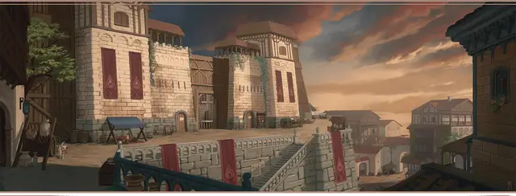

Наёмник Пламенного кулака
Flaming Fist Mercenary

Характеристики Сила, Телосложение, Харизма
Черта Крепкий
Навыки Восприятие, Запугивание
Инструменты Инструменты кузнеца
Снаряжение Выберите А или Б: (А) Булава, Инструменты кузнеца, Отличная одежда, Кандалы, Портативный таран и 4 ЗМ; или (Б) 50 ЗМ
Пламенный кулак — это гильдия силовиков-наёмников, управляемая Великим герцогом Врат Балдура, а заодно и главное средство поддержания в этом городе закона и порядка. Некогда вы служили в Кулаке и научились там, как грозным взглядом предотвратить потасовку, и как держать удар, когда пришлось вступить в бой. Наёмники Пламенного кулака, как настоящие, так и бывшие, считаются одними из самых крепких бойцов по всему Побережью мечей, и вы стараетесь поддерживать эту репутацию.